How do you "plan" your speech?
Speaking is natural. Before studying AP, you might not pay much attention on how you speak. What's matter before you open your mouth is the "semantic organization" of your speech, namely the content involved in your conversation. However, do you only think about the content of speech before produciton? Definitely not! Speaking involves not only the extraction of lexicons and semantic organization, but also the basic "planning" of articulatory gestures; for each consonantal segment, you have to think about (1) the target place that the active articualtors should move to, (2) how closely the active articulators should approach the passive ones, as well as (3) whether the sound involves vocal fold vibration. In other words, manipulating the interaction among oral organs is crucial when making a speech sound. In this regrad, to describe a consonant "professionally," it is of great importance to know the above three dimensions of sounds.
As for vowels, we consider a bit different aspects from consonants since their acoustic properties and quality are totally apart from consonants. When describing vowels, you may focus on (1) the height and (2) backness of the tongue since vowels are sounds that allow great amount of airflow passing through the oral/ nasal cavity. The tongue does not really form a close contact with the passive articulators. In addition, (3) the roundness of lips is also involved when we are to describe a vowel. In this section, the following paragraphs will only focus on descriptions of consonants and provide a brief definition and figures to show you where the tongue moves to, how the tongue is moved and the condition of vocal folds during speech production.
Descriptions of Consonants
Place of Articulation
Place of articulation refers to where the constriction or obsrtuction of air occurs in the oral cavity when producing consonants. In other words, it refers to whether you place your tongue. In the section of "Articulatory Anatomy," we introduced the names of oral organs from the anterior part to the posterior part along the upper plane of the gingiva. Each of them is a place that you can use different parts of your tongue to approach or touch upon. Based on where the constriction is formed, 8 places of articulation for consonats will be introduced here with English sounds as examples.
| 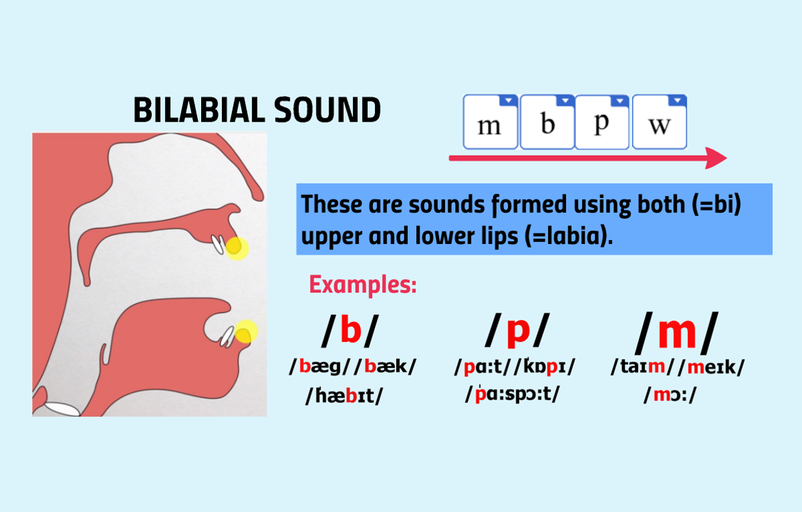 |
Labial soundsLabial sounds refer to consonants that are articulated with both lips approaching each other. English examples include /m/, /b/, /p/ and /w/. |
| 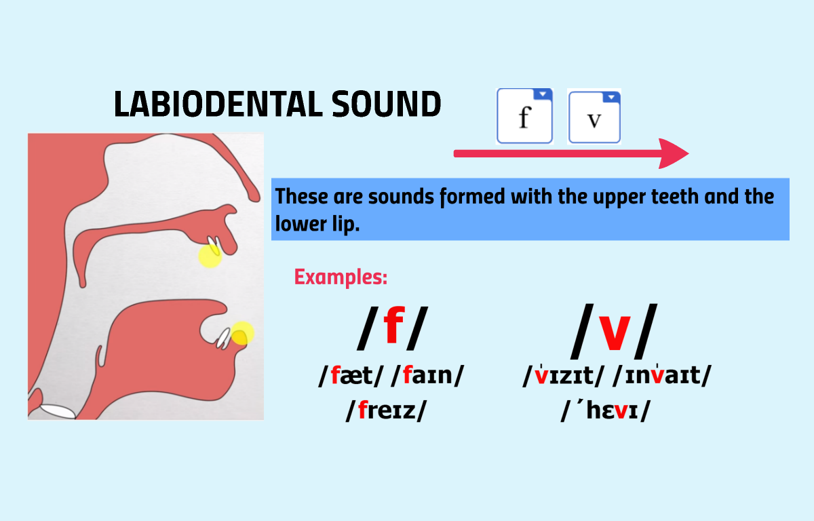 |
Labio-dental soundsLabio-dental sounds refer to consonants articulated with the upper teeth approaching the lower lip. English examples include /f/ and /v/. |
| 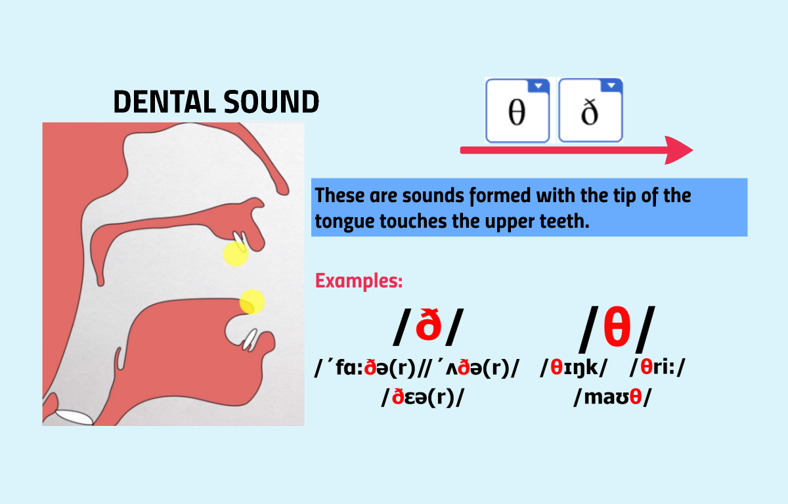 |
Dental soundsDental sounds refer to consonants articulated with the tongue tip approaching the front teeth. English examples include /θ/ and /ð/. However, to produce them, we will see speakers put their tongue tip between the upper and lower teeth more often. The constriction is made interdentally, and therefore they are more specifically called interdental sounds. |
| 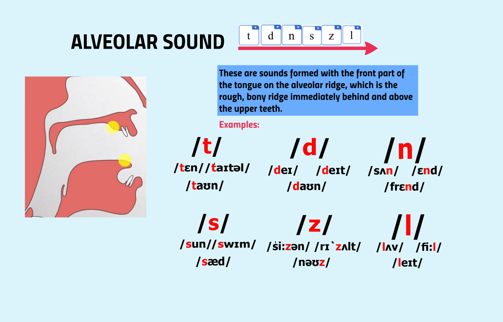 |
Alveolar soundsAlveolar sounds refer to consonants articulated with the tongue tip approaching the alveolar ridge. English examples include /t/, /d/, /n/ and so forth. |
| 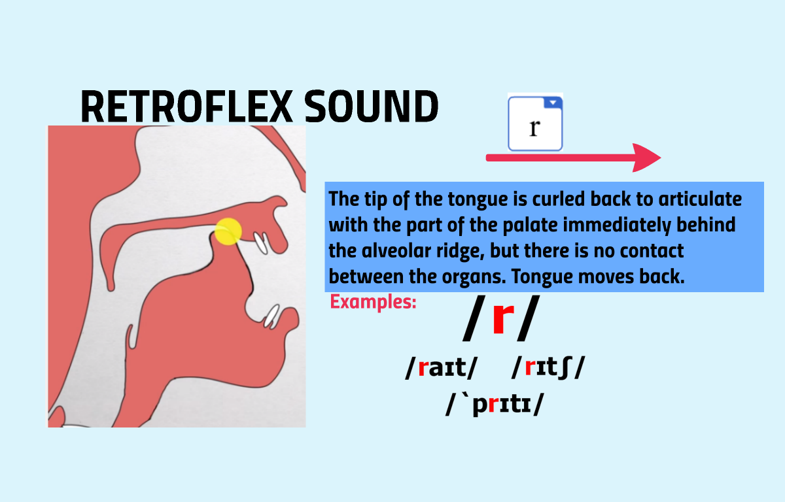 |
Retroflex soundsRetroflex sounds refer to consonants articulated with the back of the tongue tip approaching the palate. An English example is /ɹ/. A Mandarin exmaple is /er/. |
| 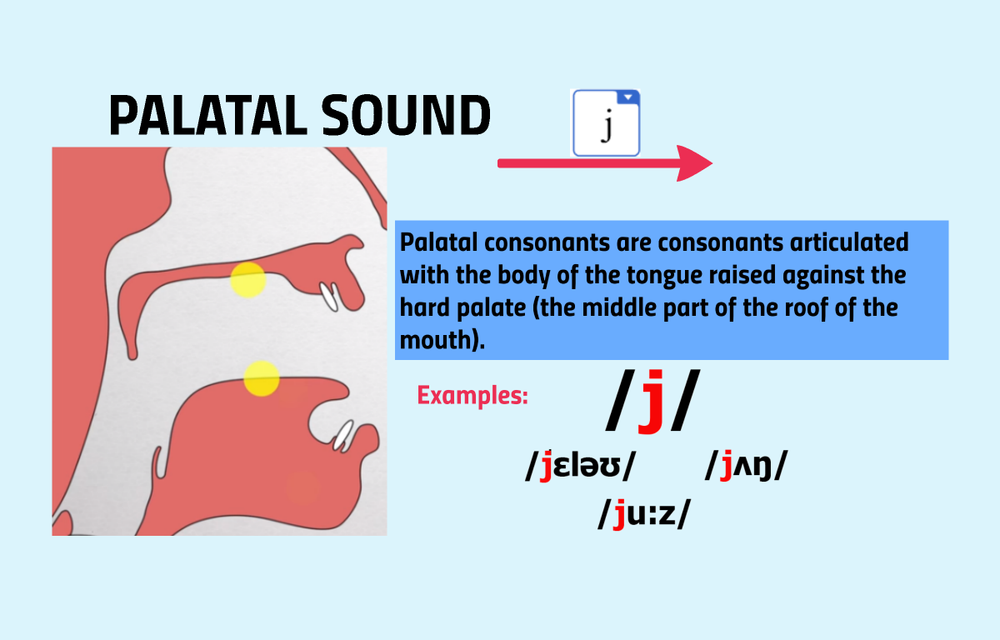 |
Palatal soundsPalatal sounds refer to consonants articulated with the tongue blade (body) approaching the hard palate. An English example is /j/ in "yellow". |
| 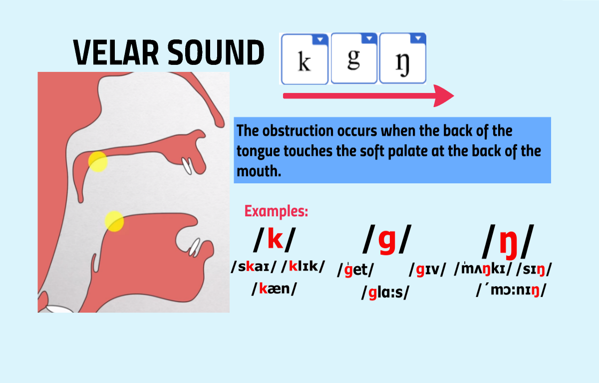 |
Velar soundsVelar sounds refer to consonants articulated with the tongue body or tongue back approaching the velum. English examples include /k/, /g/ and /ŋ/. |
| 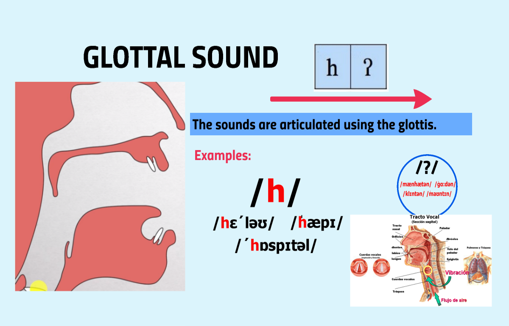 |
Glottal soundsGlottal sounds refer to consonants articulated with the glottis (located at the larynx). The vocal folds will open apart or close abductedly to create glottal slounds. English examples include /h/ and /ʔ/ as in "uh-ʔ-oh". |
Manner of Articulation
Manner of articulation refers to how close one acrticulator approach another to produce a consonant, namely the degree of constriction of a consonant. The airflow coming from the lungs will be influenced in terms of how it flows out the oral and nasal cavity. Based on how the airflow is modulated as a function of the degree of constricton formed by articulators, there are 5 basic types of manner of articulation. English examples will be offered to help you sense the difference among each of them.
| 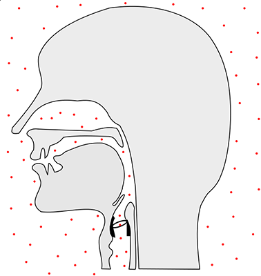 |
Plosive soundsPlosive sounds are named oral stops as well. When producing plosive sounds, two artculators are held in contact with each other tightly. In this regard, the airflow will be constricted behind the constriction, and then be released with air going out from the resonance cavity. Since the air pressure will accumalate during the obstruction, the release of pressure will result in a burst of plosion, and therefore the sound is called a "plosive". In Enlgish, depedning on the place of the tight constriciton, we have several types of stops, including but not limited to labial stops (the lips are in contact as shown in the figure) such as /p/, alveoalar stops (the tongue tip is in contact with the alveolar ridge) such as /t/ and so forth. |
| 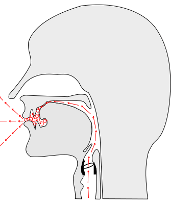 |
Fricative soundsFricative sounds are formed by moving the active articulator to closely approach but not touch upn one passive articulator, creating a narrowing passage between the two oral organs. In this regard, the airflow will not be firmly constricted; since the degree of constriciton is still large, the air passing through the narrow passage will result in continuous hissing sounds. In Enlgish, depedning on the place of the narrowing, we have several types of fricatives, including but not limited to labio-dental fricatives such as /f/, alveoalar fricatives such as /s/ shown in the figure, and so forth. |
| 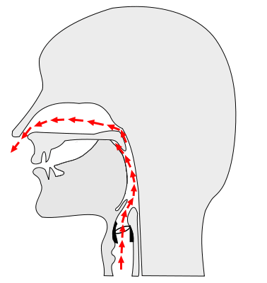 |
Nasal soundsNasal sounds are made by forming a tight constriction in the oral cavity and release the airflow from the nasal cavity. The mechanism for speakers to release the airflow from the nasal port is to "lower" their velum. Velum is a piece of soft tissue which can be raised or lowered to close or open the nasal port. In English, based on where the constriction is made, we have several types of nasals, including but not limited to an alveolar nasal /n/ (forming a constriction by moving the tongue tip to touch the alveolar ridge and lower the velum), a velar nasal /ŋ/ (forming a constriction by moving the tongue back to touch the lowered velum) as shown in the figure, and so forth. |
| 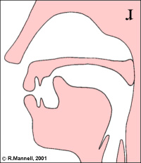 |
Liquid soundsLiquid sounds are genrally formed with the degree of constriction smaller than fricatives but greater than glides and vowels. In this regard, they are also parts of "Approximant sounds." Liquids are especailly categorrized as one group because of their voice quality. In addition, if the liquid sound is created with the air flows from two sides of the tongue, it is called "lateral sound," such as the alveolar lateral /l/ in English. English has the other liquid sound which is created with the air flows from the center of the tongue, i.e. /ɹ/ as in "rabbit," which is shown in the figure. |
| 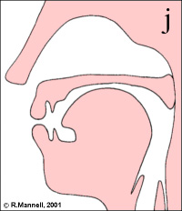 |
Glide soundsGlide sounds are formed with with the degree of constriction smaller than liquids but greater than vowels. In this regard, they are also parts of "Approximant sounds." Glides are expecially classified as one group because their acoustic property is much more vowel-alike, compared to other types of consonants. As a reuslt, glides are also called "semi-vowels." In English, there are two glide sounds: /j/ and /w/. The former is a consonantal counterpart of the high front vowel /i/ (as in "beat") with the tongue body moving up to the hard palate. The gesture for /j/ is shown in the figure. The latter one is a consonantal counterpart of the high back vowel /u/ (as in "boot") with the tongue back moving up to the velum while rounding the lips. |
Voicing

Voicing refers to the phonation condition of vocal folds. There are several phonation types, but as for describing sounds in English as examples, only two types are involved: voiced and voicelss. The above gif shows the movement of vocal folds while production. When a sound is produced with vocal fold vibration, it is regarded as voiced sounds; on the other hand, when a sound is produced without vocal fold vibration, it is regarded as voiceless sounds. However, for English stops, the voiceless ones are produced with extra release of burst. This qualty is called "aspiration." As for the seemingly voiced stops such as /b/ or /d/, they are sometimes not genuine voiced stops, but voiceless ones produced without aspiration.